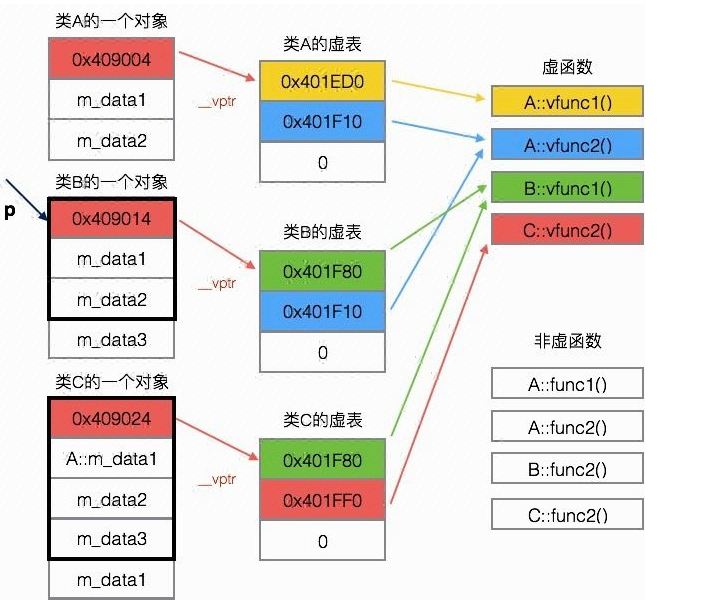

?
1. 继承⏳
一个类继承另外一个类，可能出于:
- 实现继承: 需要复用基类的变量与方法，在此基础上再定义自己的新东西
- 子类的代码散步在两个类中，增加耦合；组合优于继承
- 接口继承 (子类型多态): 需要向上转型与动态绑定
(1). 派生类构造函数⏳
派生类的构造函数必须遵循:
- 先调用基类的构造器，再初始化自己的部分
C++ 中在初始表处调用基类的 ctor 即可，如果没调用就对基类成员执行默认初始化。
cpp impl
class Book {
std::string isbn;
public:
Book(const std::string& isbn) : isbn(isbn) { }
};
class Fiction : public Book {
int price;
public:
Fiction(const std::string& isbn, int price) : Book(isbn), price(price) { } // 顺序不同也行
}
(2). 继承与访问控制⏳
C++ 中，派生类对象中的基类子对象部分成员的访问权限受两个因素影响:
- 基类中该成员的访问说明符
- 派生类的派生列表中的访问说明符 (
class默认私有继承，struct默认公有)
私有继承/保护继承会导致 (注: 派生访问说明符只影响对象的访问权限，类该是什么还是什么):
- 对派生对象的基类子对象成员的访问受限
- 派生类对象无法向上转型
私有继承的场景:
e.g.1 实现某个类时只需要另一个类的某些实现，不需要继承关系
class Timer {
public:
virtual void timeout() { ... }
};
class Widget : private Timer {
public:
virtual void timeout() {
Timer::timeout();
doSomething();
}
};
e.g.1 描述的是场景用组合实现更为合适，私有继承常用于空基类优化中。
e.g.2 空基类优化 (EBO)
class MyAllocator {
void method1();
void method2();
};
class MyVector : private MyAllocator {
...
};
为保证同一类型的不同对象地址始终有别，任何对象的大小至少为 1 (即使为空)，但基类子对象不受制约。在这个例子中:
MyVector需要MyAllocator的方法，但实现为组合会浪费空间- 直接 public 继承会使得
MyVector可以转型为MyAllocator，并不合适
(3). 其他零碎⏳
- 一旦基类标记了某函数是
virtual，所有派生类中该函数都是虚函数，无需再加virtual override有助于检查重写的人工错误 (形参列表后/引用限定符后/const 后)- 子类型多态有时需要类型转换，可以使用
static_cast或dynamic_cast - 对象之间不存在类型转换，只有拷贝 (
Derived d):Base b(d): 调用Base::Base(const Base&)b = d: 调用Base::operator=(const Base&)
final关键字:- 修饰类
class Base final {};禁止该类被继承 - 修饰函数
void func() const final;禁止该函数被覆盖 - 修饰虚函数
void func() override final;，修饰派生类的时候有用，意图使覆盖到此为止
- 修饰类
2. 绑定⏳
派生类对象可以假设为多个子对象的线性排列，但变量名/函数名的访问是按作用域规则嵌套的，对形如 obj.xxname 的语句，需要将 xxname 绑定到某个子对象的成员，此即为绑定 (起点 + 作用域).
判断是什么绑定
class Fu {
public:
std::string name = "父变量";
void show() {
cout << this->name << endl;
cout << this->func() << endl;
}
virtual std::string func() {
cout << this->name << endl;
return "父类调用";
}
};
class Zi : public Fu {
public:
std::string name = "子变量";
std::string func() {
cout << this->name << endl;
return "子类调用";
}
};
int main() {
Zi zi;
Fu &fu = zi;
cout << fu.name << endl;
cout << fu.func() << endl;
fu.show();
}
// 父变量 子变量 子类调用 父变量 子变量 子类调用
(1). 静态绑定 & 动态绑定⏳
静态绑定 —— 从静态类型开始的名字查找
- 从变量的 静态类型 出发，向外层作用域寻找该名字的定义在哪
- 找到后，如果是函数名，还会进行类型检查 (不通过就报错)
若 name 是虚函数名且 obj 是引用/指针，运行时执行动态绑定 —— 从动态类型开始的名字查找
- 从变量的 动态类型 出发，向外层作用域寻找名字定义
二者对比:
- 名字查找的逻辑一样但实现不同，静态绑定编译期进行，动态绑定在运行时查找类的虚表实现
动态绑定的具体实现
class A { class B : public A { class C : public B {
public: public: public:
virtual void vfunc1(); virtual void vfunc1(); virtual void vfunc2();
virtual void vfunc2(); void func1(); void func2();
void func1();
void func2();
private: private: private:
int m_data1, m_data2; int mdata_3; int m_data1;
}; };
- 每个包含虚函数的类都有一个虚表 (指针数组)，其中保存函数指针，注意虚表是属于类的
- 虚表给出了该类的虚函数名字绑定到哪个实例上，这些在编译时可以确定
- 编译器在类中创建一个虚表指针
vptr，使得对象实例化时包含虚表指针

由此可见，虚函数的代价在于需要额外空间，且运行时需要额外时间进行名字查找
(2). 函数重载 & 静态绑定⏳
编译时「先静态绑定再类型检查」，可能导致派生类函数名错误地遮蔽了基类的函数名
- 动态绑定相当于把重载函数视为不同函数，这也是二者名字查找过程的区别之一
e.g.1 派生类想增加一个新重载
派生类增加新重载使对 f 的查找卡在 derived，造成类型检查错误
struct Base {
void f(int) { cout << "Base 1xint" << endl;}
};
struct Derived : public Base {
void f(int, int, int) { cout << "Derived 3xint" << endl; }
};
int main {
Derived d;
d.f(1); // error
}
e.g.2 派生类只想重写一部分父类的重载函数
派生对象要想访问父对象的全部重载函数
- 要么一个也不重写，名字查找过程会自动到父类的作用域
- 要么全部重写
而只想重写一部分就会导致另一部分无法访问。
struct Base {
virtual f(int) { cout << "Base 1xint" << endl; }
virtual f(int, int) { cout << "Base 2xint" << endl; }
};
struct Derived : public Base {
virtual f(int, int) { cout << "Derived 2xint" << endl; }
};
int main {
Derived* d;
Base* b = d;
b->f(1); // correct
d->f(1); // compile error
}
在 Derived 中声明一个 using Base::f;，类型不匹配的函数会转而访问这个 using 声明点。
(3). 作用域运算符⏳
通过 derived->Base::func() 的形式，可以：
- 在派生类中访问基类中的同名变量或函数
- 回避动态绑定
e.g.1 名字冲突时，使用作用域运算符访问隐藏成员
struct Base {
int mem = 0;
};
struct Derived : Base {
int mem = 100;
int getMem() { return Base::mem; }
};
e.g.2 回避动态绑定
struct Base {
virtual void func() { }
};
struct Derived : public Base {
void func() {
this->Base::func();
doSomething();
}
};
int main {
Base *b = new Derived();
b->func();
}
(4). 虚标记的意义⏳
考虑普通调用 d->func() 和多态调用 b->func()
- 编译时无法获取动态类型，要想获取动态类型必须付出代价
- 希望普通调用不付出代价，而只有多态调用付出运行时的代价
因此引入了 virtual 标记，表明虚函数是「需要多态调用的函数」
为什么确定动态类型要推到运行时?
接口继承/子类型多态/向上转型/动态绑定，均指 oop 中的以下场景:
class Base { ... };
class Derived : public Base { ... };
...
Derived derived
Base& base = derived;
base.func();
base 的静态类型是 Base，动态类型 (实际绑定的类型) 是 Derived，需要注意
- 编译时未必可以确定一个变量的动态类型
把 derived 的 func() 绑定到 base 上必须推到运行时
这样设计会引入“非虚函数使用多态调用”这种语法正确的错误行为，这也符合 C++ 「相信程序员，提供灵活性」的宗旨
| virtual | non-virtual | |
|---|---|---|
| 普通调用 | 静态类型动态类型一致，浪费 | |
| 多态调用 | 作用域覆盖，通常是忘加了 |
3. 抽象类和接口⏳
抽象类和接口是更加倾向接口继承的基类，归一化共同的行为，舍弃复用的耦合
- 抽象类: 可以定义变量、普通函数和抽象函数 (保留一部分复用)，但不能被实例化，只能单继承
- 接口: 在抽象类基础上，变量只能是
public static final，函数只能是抽象函数，可以多继承
C++ 中，在虚函数声明的分号前加 =0 即可声明纯虚函数，包含纯虚函数的类是抽象类